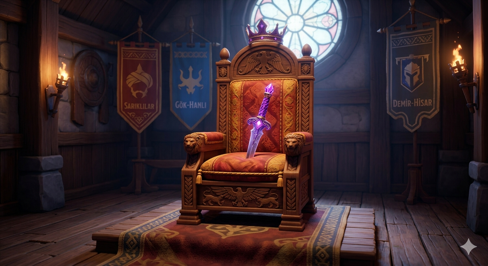

Ücretsiz tarayıcı oyunu
Kabile Savaşları: Murat Ağa'nın Mirası

Kabile Savaşları, Murat Ağa’nın mor kabzalı hançerle öldürülmesinin ardından geçen tek oyunculu bir strateji oyunudur. Oyuncu üç kabilenin hepsini yönetmez; Sarıklılar, Gök-Hanlı veya Demir-Hisar içinden tek bir sancak seçer.
Nasıl oynanır?
Hex haritada toprak kapar, köy kurar, kervan gönderir ve rakip karakolların akınına karşı durursun. Bina ve asker seviyesi senin seviyeni geçemez. Parşömenler hikâyeyi taşır: 1–39 yanlış iz, 40. seviyede Gölge Tapınağı, 100. seviyede Gölge Elçisi.
Üç kabile
- Sarıklılar — bomba ve ateş üstünlüğü
- Gök-Hanlı — kritik vuruş
- Demir-Hisar — zırh
Kabile Savaşları tarayıcıda, telefonda veya bilgisayarda ücretsiz oynanır. Kayıt cihazındaki tarayıcıda saklanır.